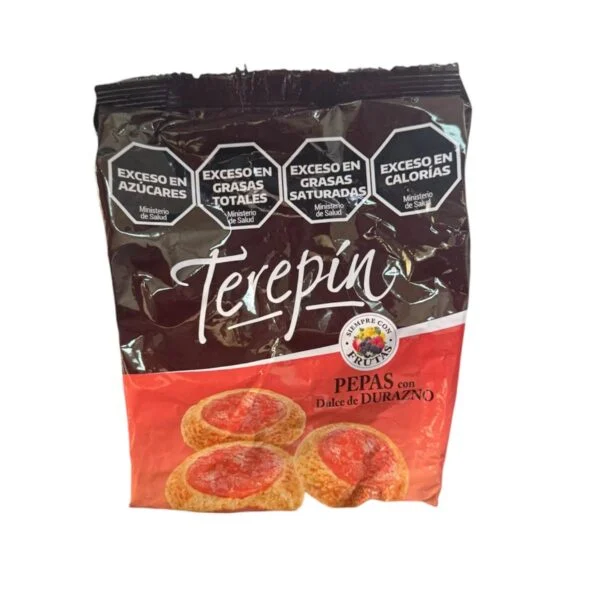
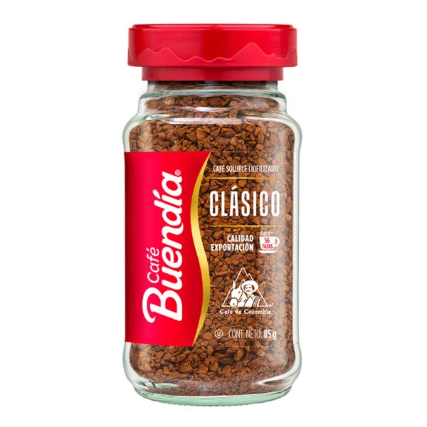
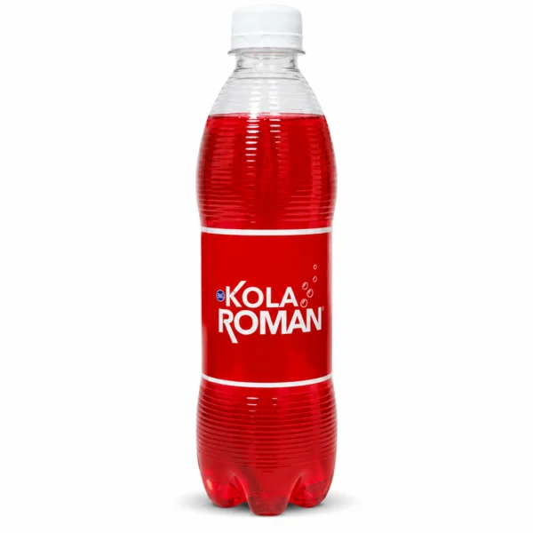
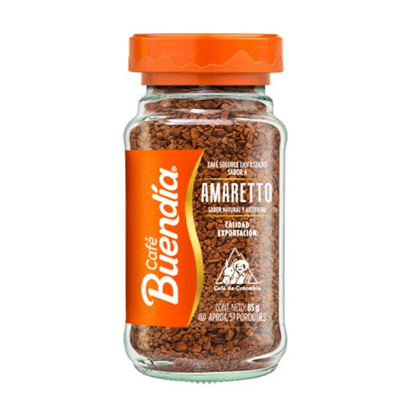

Para tu despensa
Ingredientes, conservas y productos de distintas cocinas latinoamericanas. Explora el catálogo por país.
Ruzafa, València
Alimentos y bebidas de Latinoamérica en Valencia. Descubre el catálogo y encuentra ingredientes para tu próxima receta.

Un lugar con identidad
Tropicalia es una tienda de alimentos latinos en Matías Perelló. Su catálogo reúne productos de países como Argentina, Brasil, Colombia, Perú y Venezuela.
Esta propuesta presenta la tienda y algunos productos publicados. Las compras, el surtido actual y las condiciones se consultan en el sitio del establecimiento.
Los canales del local ↗A tu manera
Tienda de productos latinos. Ruzafa, València.
Ingredientes, conservas y productos de distintas cocinas latinoamericanas. Explora el catálogo por país.
Galletas, dulces, café y bebidas para acompañar tus encuentros. Consulta formatos y existencias en la tienda.
El sitio de Tropicalia comparte recetas como arepas, chipá y pan de queso. Encuentra inspiración y consulta los ingredientes.
Una mirada al lugar
Fotografías de productos del catálogo de Tropicalia. Ejemplos de presentación; consulta la disponibilidad actual en el sitio de la tienda.



Todo a mano
Consulta la información publicada por el establecimiento en sus canales.
Nos vemos aquí
Visita la tienda en Ruzafa o consulta el catálogo del establecimiento antes de venir.
Llamar a la tiendaLunes a viernes · 10:00–14:00 y 16:30–20:30. Sábados · 10:00–14:30. Confirma festivos con la tienda.